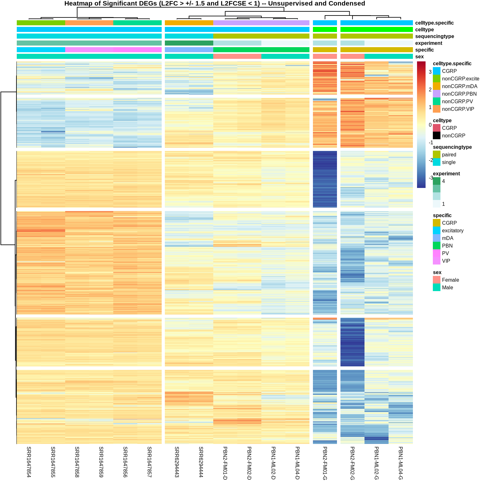
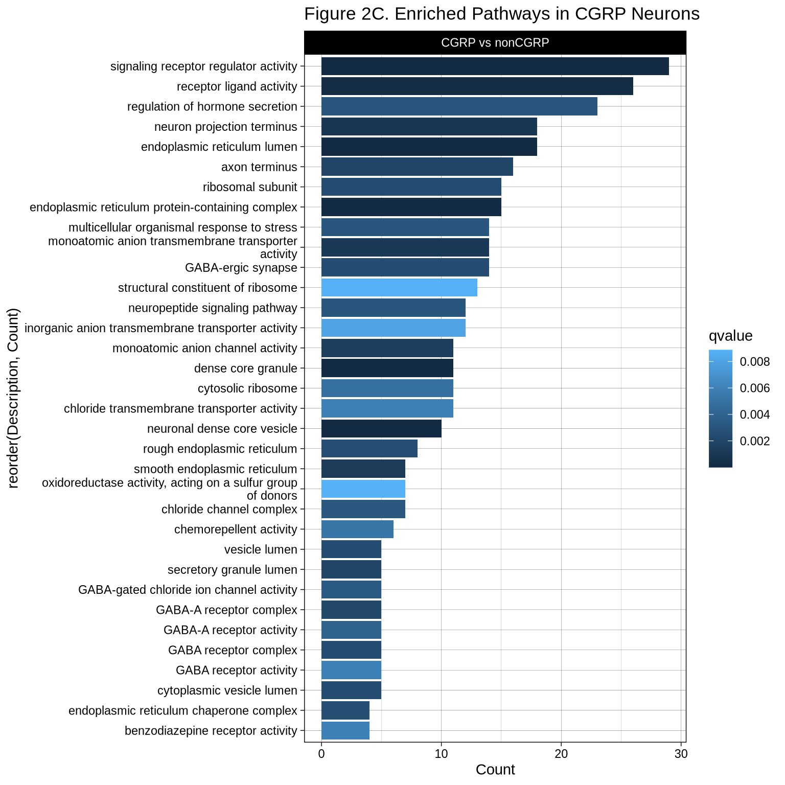

PBN RNAseq DeSeq2 RNA-Sequencing Analysis – By Cell Type
Last updated: 2026-03-06
Checks: 6 1
Knit directory: CGRPReinforcement/
This reproducible R Markdown analysis was created with workflowr (version 1.7.2). The Checks tab describes the reproducibility checks that were applied when the results were created. The Past versions tab lists the development history.
Great! Since the R Markdown file has been committed to the Git repository, you know the exact version of the code that produced these results.
Great job! The global environment was empty. Objects defined in the global environment can affect the analysis in your R Markdown file in unknown ways. For reproduciblity it’s best to always run the code in an empty environment.
The command set.seed(20260305) was run prior to running
the code in the R Markdown file. Setting a seed ensures that any results
that rely on randomness, e.g. subsampling or permutations, are
reproducible.
Great job! Recording the operating system, R version, and package versions is critical for reproducibility.
Nice! There were no cached chunks for this analysis, so you can be confident that you successfully produced the results during this run.
Using absolute paths to the files within your workflowr project makes it difficult for you and others to run your code on a different machine. Change the absolute path(s) below to the suggested relative path(s) to make your code more reproducible.
| absolute | relative |
|---|---|
| ~/Documents/GitHubRepos/CGRPReinforcement/ | . |
Great! You are using Git for version control. Tracking code development and connecting the code version to the results is critical for reproducibility.
The results in this page were generated with repository version ad2e5c9. See the Past versions tab to see a history of the changes made to the R Markdown and HTML files.
Note that you need to be careful to ensure that all relevant files for
the analysis have been committed to Git prior to generating the results
(you can use wflow_publish or
wflow_git_commit). workflowr only checks the R Markdown
file, but you know if there are other scripts or data files that it
depends on. Below is the status of the Git repository when the results
were generated:
Ignored files:
Ignored: .Rproj.user/
Ignored: renv/library/
Ignored: renv/staging/
Untracked files:
Untracked: output/PBNRNASeq_CellType_GOFullAnalysis.csv
Untracked: output/PBNRNASeq_byHAtag_GOFullAnalysis.csv
Untracked: output/PBNRNASeq_bySex_GOFullAnalysis.csv
Untracked: output/PBNRNAseq_normalized_counts_DESeq2.txt
Unstaged changes:
Modified: output/Figure1B_PBNRNAseq_PCA_byHATag.pdf
Modified: output/Figure1F_GOHA.pdf
Note that any generated files, e.g. HTML, png, CSS, etc., are not included in this status report because it is ok for generated content to have uncommitted changes.
These are the previous versions of the repository in which changes were
made to the R Markdown (analysis/index2.Rmd) and HTML
(docs/index2.html) files. If you’ve configured a remote Git
repository (see ?wflow_git_remote), click on the hyperlinks
in the table below to view the files as they were in that past version.
| File | Version | Author | Date | Message |
|---|---|---|---|---|
| Rmd | ad2e5c9 | avm27 | 2026-03-06 | Updating all analysis files to include full outputs |
| html | 51278e5 | avm27 | 2026-03-05 | Build site. |
| Rmd | 3fbf1eb | avm27 | 2026-03-05 | Publish supplementary analyses |
1 DESeq2 Analysis
DESeq2 is called our post-processing ## Setup and Analysis ###Building DESeq2 input files from gene count matrices output by String Tie.
###Running DeSeq2 analysis with factor levels of cell type.
colData$celltype <- factor(colData$celltype)
colData$specific <- factor(colData$specific)
dds <- DESeqDataSetFromMatrix(countData = countData, colData = colData, design = ~celltype)
dds2 <- DESeqDataSetFromMatrix(countData = countData, colData = colData, design = ~specific)
## Filter out counts less than 50 across the rows
## This helps to remove noise from the data set
keep <- rowSums(counts(dds)) >= 50
dds <- dds[keep,]
keep2 <- rowSums(counts(dds2)) >= 50
dds2 <- dds2[keep2,]
## Re-level Conditions to Analyze Each group against nonCGRP in grouped condition and CGRP in ungrouped conditiong
dds$celltype <- relevel(dds$celltype, ref = "nonCGRP")
dds <- DESeq(dds)
dds2$specific <- relevel(dds2$specific, ref = "CGRP")
dds2 <- DESeq(dds2)
#resultsNames(dds)
#resultsNames(dds2)
plotDispEsts(dds)
| Version | Author | Date |
|---|---|---|
| 51278e5 | avm27 | 2026-03-05 |

| Version | Author | Date |
|---|---|---|
| 51278e5 | avm27 | 2026-03-05 |
1.1 Plot Estimates and Gather Results
These results include overview for each result file and dispersion estimates based on count values
1.1.1 Dispersion Estimates based on count values
res1 <- results(dds, name = "celltype_CGRP_vs_nonCGRP")
res2 <- results(dds2, name = "specific_PBN_vs_CGRP")
res3 <- results(dds2, name = "specific_excitatory_vs_CGRP")
res4 <- results(dds2, name = "specific_mDA_vs_CGRP")
res5 <- results(dds2, name = "specific_PV_vs_CGRP")
res6 <- results(dds2, name = "specific_VIP_vs_CGRP")
#summary(res1)
#summary(res2)
#summary(res3)
#summary(res4)
#summary(res5)
#summary(res6)1.2 Significant DEGs By Comparison
This subsection is for annotation the results files to include all necessary information for downstream analyses. This is due to the use of StringTie to generate count matrices with the specific mm10 annotation files that we use. Other methods will probably not require this, but our gene names are split by the “|” delimiter and must be separated in order to accurately generate the required Gene Symbols for mapping to entrez, ensemble and descriptions from Org.mm.eg.db.
After annotation we subset the results to only view the significantly differentially expressed genes with an adjusted p-value > 0.05.
1.2.1 CGRP vs nonCGRP
results_sig1 <- subset(res1, padj < 0.05)
kable((head(results_sig1, 20)), caption = "Significant DEGs CGRP vs nonCGRP", format = "html", align = "l", booktabs = TRUE) %>%
kable_styling(html_font = "Arial", font_size = 10, bootstrap_options = c("striped", "hover", "condensed", "responsive")) %>%
scroll_box(width = "1000px", height = "500px")| baseMean | log2FoldChange | lfcSE | stat | pvalue | padj | symbol | description | entrez | ensembl | |
|---|---|---|---|---|---|---|---|---|---|---|
| Sox17|Sox17 | 12.302830 | -7.792357 | 2.1755764 | -3.581744 | 0.0003413 | 0.0015752 | Sox17 | SRY (sex determining region Y)-box 17 | 20671 | ENSMUSG0…. |
| Gm16041|Gm16041 | 65.424651 | -10.171540 | 1.6914286 | -6.013580 | 0.0000000 | 0.0000000 | Gm16041 | predicted gene 16041 | 102631647 | ENSMUSG0…. |
| LOC108167788|LOC108167788 | 3.248502 | -5.793485 | 2.2524845 | -2.572042 | 0.0101101 | 0.0285848 | LOC108167788 | NA | NA | |
| 2610203C22Rik|2610203C22Rik | 35.965915 | -9.293980 | 1.5464766 | -6.009777 | 0.0000000 | 0.0000000 | 2610203C22Rik | RIKEN cDNA 2610203C22 gene | 72481 | NA |
| 3110035E14Rik|3110035E14Rik | 755.604191 | -6.195075 | 1.0722302 | -5.777748 | 0.0000000 | 0.0000001 | 3110035E14Rik | NA | NA | |
| Tcf24|Tcf24 | 8.319762 | -7.184292 | 2.5774804 | -2.787332 | 0.0053144 | 0.0166150 | Tcf24 | transcription factor 24 | 100039596 | ENSMUSG0…. |
| Ppp1r42|Ppp1r42 | 20.503702 | -8.478597 | 1.4201683 | -5.970135 | 0.0000000 | 0.0000000 | Ppp1r42 | protein phosphatase 1, regulatory subunit 42 | 69312 | ENSMUSG0…. |
| Snhg6|Snhg6 | 159.548423 | 1.706234 | 0.5484570 | 3.110971 | 0.0018647 | 0.0068095 | Snhg6 | small nucleolar RNA host gene 6 | 73824 | ENSMUSG0…. |
| Slco5a1|Slco5a1 | 164.175059 | -4.014978 | 1.1216357 | -3.579574 | 0.0003442 | 0.0015848 | Slco5a1 | solute carrier organic anion transporter family, member 5A1 | 240726 | ENSMUSG0…. |
| Ncoa2|Ncoa2 | 2039.170059 | -3.745487 | 0.9777596 | -3.830683 | 0.0001278 | 0.0006676 | Ncoa2 | nuclear receptor coactivator 2 | 17978 | ENSMUSG0…. |
| Eya1|Eya1 | 129.715095 | -3.300441 | 1.2068004 | -2.734869 | 0.0062405 | 0.0190479 | Eya1 | EYA transcriptional coactivator and phosphatase 1 | 14048 | ENSMUSG0…. |
| Tram1|Tram1 | 3147.772029 | 2.102354 | 0.7050928 | 2.981670 | 0.0028668 | 0.0098245 | Tram1 | translocating chain-associating membrane protein 1 | 72265 | ENSMUSG0…. |
| LOC102634042|LOC102634042 | 23.682138 | -8.680400 | 1.4081871 | -6.164237 | 0.0000000 | 0.0000000 | LOC102634042 | NA | NA | |
| Tmem70|Tmem70 | 757.226673 | 1.433986 | 0.5657315 | 2.534747 | 0.0112529 | 0.0312499 | Tmem70 | transmembrane protein 70 | 70397 | ENSMUSG0…. |
| LOC108167615|LOC108167615 | 21.886438 | -8.589496 | 1.8173943 | -4.726270 | 0.0000023 | 0.0000185 | LOC108167615 | NA | NA | |
| Gm28783|Gm28783 | 16.623948 | -8.186229 | 2.2586001 | -3.624470 | 0.0002896 | 0.0013611 | Gm28783 | predicted gene 28783 | 102634310 | NA |
| Jph1|Jph1 | 500.093413 | -13.114937 | 1.2067733 | -10.867772 | 0.0000000 | 0.0000000 | Jph1 | junctophilin 1 | 57339 | ENSMUSG0…. |
| Mcm3|Mcm3 | 10.063966 | -7.501371 | 2.0444886 | -3.669070 | 0.0002434 | 0.0011716 | Mcm3 | minichromosome maintenance complex component 3 | 17215 | ENSMUSG0…. |
| Tram2|Tram2 | 14.889437 | -8.030535 | 2.0041586 | -4.006936 | 0.0000615 | 0.0003510 | Tram2 | translocating chain-associating membrane protein 2 | 170829 | ENSMUSG0…. |
| Gm28836|Gm28836 | 8.141567 | -7.156888 | 1.2849058 | -5.569971 | 0.0000000 | 0.0000003 | Gm28836 | predicted gene 28836 | 102635593 | NA |
1.2.2 PBN vs CGRP
results_sig2 <- subset(res2, padj < 0.05)
kable((head(results_sig2, 20)), caption = "Significant DEGs PBN vs CGRP", format = "html", align = "l", booktabs = TRUE) %>%
kable_styling(html_font = "Arial", font_size = 10, bootstrap_options = c("striped", "hover", "condensed", "responsive")) %>%
scroll_box(width = "1000px", height = "500px")| baseMean | log2FoldChange | lfcSE | stat | pvalue | padj | symbol | description | entrez | ensembl | |
|---|---|---|---|---|---|---|---|---|---|---|
| Sox17|Sox17 | 12.302830 | 9.2051805 | 1.7418033 | 5.284857 | 0.0000001 | 0.0000013 | Sox17 | SRY (sex determining region Y)-box 17 | 20671 | ENSMUSG0…. |
| Xkr4|Xkr4 | 3132.014909 | -1.1700677 | 0.4737793 | -2.469647 | 0.0135246 | 0.0473228 | Xkr4 | X-linked Kx blood group related 4 | 497097 | ENSMUSG0…. |
| Gm16041|Gm16041 | 65.424651 | 8.0180761 | 1.8527937 | 4.327560 | 0.0000151 | 0.0001152 | Gm16041 | predicted gene 16041 | 102631647 | ENSMUSG0…. |
| Oprk1|Oprk1 | 1128.796226 | -1.8928371 | 0.5771447 | -3.279658 | 0.0010393 | 0.0052746 | Oprk1 | opioid receptor, kappa 1 | 18387 | ENSMUSG0…. |
| Atp6v1h|Atp6v1h | 3278.554656 | -1.0906704 | 0.3295678 | -3.309397 | 0.0009350 | 0.0048128 | Atp6v1h | ATPase, H+ transporting, lysosomal V1 subunit H | 108664 | ENSMUSG0…. |
| St18|St18 | 792.909976 | 4.4843270 | 1.3359404 | 3.356682 | 0.0007888 | 0.0041335 | St18 | suppression of tumorigenicity 18 | 240690 | ENSMUSG0…. |
| 2610203C22Rik|2610203C22Rik | 35.965915 | 8.3190664 | 1.4625796 | 5.687941 | 0.0000000 | 0.0000002 | 2610203C22Rik | RIKEN cDNA 2610203C22 gene | 72481 | NA |
| 3110035E14Rik|3110035E14Rik | 755.604191 | 3.6684526 | 0.7917260 | 4.633488 | 0.0000036 | 0.0000309 | 3110035E14Rik | NA | NA | |
| Sntg1|Sntg1 | 1803.169975 | -1.6982178 | 0.4056170 | -4.186752 | 0.0000283 | 0.0002059 | Sntg1 | syntrophin, gamma 1 | 71096 | ENSMUSG0…. |
| Ppp1r42|Ppp1r42 | 20.503702 | 8.2906586 | 1.3264616 | 6.250206 | 0.0000000 | 0.0000000 | Ppp1r42 | protein phosphatase 1, regulatory subunit 42 | 69312 | ENSMUSG0…. |
| A830018L16Rik|A830018L16Rik | 1154.554769 | -1.4797868 | 0.4036522 | -3.665995 | 0.0002464 | 0.0014500 | A830018L16Rik | RIKEN cDNA A830018L16 gene | 320492 | ENSMUSG0…. |
| Rpl7|Rpl7 | 663.473109 | -0.7585755 | 0.2800276 | -2.708931 | 0.0067500 | 0.0264428 | Rpl7 | ribosomal protein L7 | 19989 | ENSMUSG0…. |
| LOC102634042|LOC102634042 | 23.682138 | 6.7194223 | 1.2583411 | 5.339905 | 0.0000001 | 0.0000010 | LOC102634042 | NA | NA | |
| LOC108167615|LOC108167615 | 21.886438 | 8.4077126 | 1.7597056 | 4.777909 | 0.0000018 | 0.0000160 | LOC108167615 | NA | NA | |
| Gm28783|Gm28783 | 16.623948 | 6.6255589 | 2.5012709 | 2.648877 | 0.0080760 | 0.0308160 | Gm28783 | predicted gene 28783 | 102634310 | NA |
| Jph1|Jph1 | 500.093413 | 13.4165416 | 1.0592705 | 12.665832 | 0.0000000 | 0.0000000 | Jph1 | junctophilin 1 | 57339 | ENSMUSG0…. |
| Mcm3|Mcm3 | 10.063966 | 8.5229120 | 2.4987694 | 3.410844 | 0.0006476 | 0.0034816 | Mcm3 | minichromosome maintenance complex component 3 | 17215 | ENSMUSG0…. |
| Tram2|Tram2 | 14.889437 | 6.0799211 | 2.3432413 | 2.594663 | 0.0094684 | 0.0352153 | Tram2 | translocating chain-associating membrane protein 2 | 170829 | ENSMUSG0…. |
| Paqr8|Paqr8 | 1654.525480 | 2.1283186 | 0.3814718 | 5.579230 | 0.0000000 | 0.0000003 | Paqr8 | progestin and adipoQ receptor family member VIII | 74229 | ENSMUSG0…. |
| Gm28836|Gm28836 | 8.141567 | 7.3469604 | 1.2888716 | 5.700304 | 0.0000000 | 0.0000001 | Gm28836 | predicted gene 28836 | 102635593 | NA |
1.2.3 Excitatory vs CGRP
results_sig3 <- subset(res3, padj < 0.05)
kable((head(results_sig3, 20)), caption = "Significant DEGs Excitatory vs CGRP", format = "html", align = "l", booktabs = TRUE) %>%
kable_styling(html_font = "Arial", font_size = 10, bootstrap_options = c("striped", "hover", "condensed", "responsive")) %>%
scroll_box(width = "1000px", height = "500px")| baseMean | log2FoldChange | lfcSE | stat | pvalue | padj | symbol | description | entrez | ensembl | |
|---|---|---|---|---|---|---|---|---|---|---|
| Xkr4|Xkr4 | 3132.014909 | 1.3617384 | 0.5807988 | 2.344596 | 0.0190477 | 0.0461738 | Xkr4 | X-linked Kx blood group related 4 | 497097 | ENSMUSG0…. |
| Tcea1|Tcea1 | 583.630443 | -2.9149873 | 0.3752173 | -7.768799 | 0.0000000 | 0.0000000 | Tcea1 | transcription elongation factor A (SII) 1 | 21399 | ENSMUSG0…. |
| Gm16041|Gm16041 | 65.424651 | 11.8986899 | 2.1515372 | 5.530320 | 0.0000000 | 0.0000002 | Gm16041 | predicted gene 16041 | 102631647 | ENSMUSG0…. |
| LOC108167788|LOC108167788 | 3.248502 | 7.6557315 | 3.1117067 | 2.460300 | 0.0138821 | 0.0348037 | LOC108167788 | NA | NA | |
| Oprk1|Oprk1 | 1128.796226 | -2.4671674 | 0.7182494 | -3.434973 | 0.0005926 | 0.0020193 | Oprk1 | opioid receptor, kappa 1 | 18387 | ENSMUSG0…. |
| Atp6v1h|Atp6v1h | 3278.554656 | -2.1023362 | 0.4086913 | -5.144068 | 0.0000003 | 0.0000016 | Atp6v1h | ATPase, H+ transporting, lysosomal V1 subunit H | 108664 | ENSMUSG0…. |
| 2610203C22Rik|2610203C22Rik | 35.965915 | 10.9866359 | 1.6455343 | 6.676638 | 0.0000000 | 0.0000000 | 2610203C22Rik | RIKEN cDNA 2610203C22 gene | 72481 | NA |
| 3110035E14Rik|3110035E14Rik | 755.604191 | 8.3072639 | 0.9651065 | 8.607613 | 0.0000000 | 0.0000000 | 3110035E14Rik | NA | NA | |
| Sntg1|Sntg1 | 1803.169975 | 1.4262427 | 0.4974875 | 2.866892 | 0.0041452 | 0.0117507 | Sntg1 | syntrophin, gamma 1 | 71096 | ENSMUSG0…. |
| Tcf24|Tcf24 | 8.319762 | 8.4526801 | 3.6035620 | 2.345646 | 0.0189941 | 0.0460613 | Tcf24 | transcription factor 24 | 100039596 | ENSMUSG0…. |
| Ppp1r42|Ppp1r42 | 20.503702 | 9.5653779 | 1.4815075 | 6.456517 | 0.0000000 | 0.0000000 | Ppp1r42 | protein phosphatase 1, regulatory subunit 42 | 69312 | ENSMUSG0…. |
| Cspp1|Cspp1 | 1847.399366 | 0.8956858 | 0.3435157 | 2.607408 | 0.0091230 | 0.0239139 | Cspp1 | centrosome and spindle pole associated protein 1 | 211660 | ENSMUSG0…. |
| Snhg6|Snhg6 | 159.548423 | -2.6232186 | 0.7791542 | -3.366751 | 0.0007606 | 0.0025355 | Snhg6 | small nucleolar RNA host gene 6 | 73824 | ENSMUSG0…. |
| Arfgef1|Arfgef1 | 1817.378132 | 1.4390453 | 0.4572235 | 3.147356 | 0.0016475 | 0.0051177 | Arfgef1 | ARF guanine nucleotide exchange factor 1 | 211673 | ENSMUSG0…. |
| Tram1|Tram1 | 3147.772029 | -4.1693538 | 0.6735905 | -6.189746 | 0.0000000 | 0.0000000 | Tram1 | translocating chain-associating membrane protein 1 | 72265 | ENSMUSG0…. |
| Terf1|Terf1 | 733.045019 | -1.2685827 | 0.4627967 | -2.741123 | 0.0061230 | 0.0166808 | Terf1 | telomeric repeat binding factor 1 | 21749 | ENSMUSG0…. |
| Rpl7|Rpl7 | 663.473109 | -3.7717391 | 0.4181704 | -9.019622 | 0.0000000 | 0.0000000 | Rpl7 | ribosomal protein L7 | 19989 | ENSMUSG0…. |
| LOC102634042|LOC102634042 | 23.682138 | 8.8335186 | 1.4006193 | 6.306866 | 0.0000000 | 0.0000000 | LOC102634042 | NA | NA | |
| Tmem70|Tmem70 | 757.226673 | -2.9430926 | 0.5333228 | -5.518408 | 0.0000000 | 0.0000002 | Tmem70 | transmembrane protein 70 | 70397 | ENSMUSG0…. |
| LOC108167615|LOC108167615 | 21.886438 | 9.8031417 | 2.0464209 | 4.790384 | 0.0000017 | 0.0000088 | LOC108167615 | NA | NA |
1.2.4 mDA vs CGRP
results_sig4 <- subset(res4, padj < 0.05)
kable((head(results_sig4, 20)), caption = "Significant DEGs mDA vs CGRP", format = "html", align = "l", booktabs = TRUE) %>%
kable_styling(html_font = "Arial", font_size = 10, bootstrap_options = c("striped", "hover", "condensed", "responsive")) %>%
scroll_box(width = "1000px", height = "500px")| baseMean | log2FoldChange | lfcSE | stat | pvalue | padj | symbol | description | entrez | ensembl | |
|---|---|---|---|---|---|---|---|---|---|---|
| Gm39585|Gm39585 | 3744.483689 | -1.7289108 | 0.6050088 | -2.857662 | 0.0042677 | 0.0181669 | Gm39585 | predicted gene, 39585 | 105243853 | NA |
| Gm16041|Gm16041 | 65.424651 | 8.2148887 | 2.1532606 | 3.815093 | 0.0001361 | 0.0008671 | Gm16041 | predicted gene 16041 | 102631647 | ENSMUSG0…. |
| Rb1cc1|Rb1cc1 | 3235.534661 | -1.7595130 | 0.2633677 | -6.680823 | 0.0000000 | 0.0000000 | Rb1cc1 | RB1-inducible coiled-coil 1 | 12421 | ENSMUSG0…. |
| 4732440D04Rik|4732440D04Rik | 1015.037791 | -0.8743559 | 0.3365638 | -2.597890 | 0.0093799 | 0.0354821 | 4732440D04Rik | RIKEN cDNA 4732440D04 gene | 654788 | NA |
| Pcmtd1|Pcmtd1 | 1797.850882 | -0.7142460 | 0.2036835 | -3.506646 | 0.0004538 | 0.0025402 | Pcmtd1 | protein-L-isoaspartate (D-aspartate) O-methyltransferase domain containing 1 | 319263 | ENSMUSG0…. |
| 2610203C22Rik|2610203C22Rik | 35.965915 | 5.5639438 | 1.6832891 | 3.305400 | 0.0009484 | 0.0049108 | 2610203C22Rik | RIKEN cDNA 2610203C22 gene | 72481 | NA |
| 3110035E14Rik|3110035E14Rik | 755.604191 | 3.2095279 | 0.9668119 | 3.319703 | 0.0009011 | 0.0046963 | 3110035E14Rik | NA | NA | |
| Cpa6|Cpa6 | 30.019318 | -24.0398351 | 4.0725261 | -5.902930 | 0.0000000 | 0.0000001 | Cpa6 | carboxypeptidase A6 | 329093 | ENSMUSG0…. |
| Ppp1r42|Ppp1r42 | 20.503702 | 4.9388593 | 1.5329890 | 3.221719 | 0.0012742 | 0.0063390 | Ppp1r42 | protein phosphatase 1, regulatory subunit 42 | 69312 | ENSMUSG0…. |
| Cspp1|Cspp1 | 1847.399366 | -1.0332346 | 0.3420921 | -3.020340 | 0.0025249 | 0.0115440 | Cspp1 | centrosome and spindle pole associated protein 1 | 211660 | ENSMUSG0…. |
| Snhg6|Snhg6 | 159.548423 | -1.8458579 | 0.7198490 | -2.564229 | 0.0103405 | 0.0384813 | Snhg6 | small nucleolar RNA host gene 6 | 73824 | ENSMUSG0…. |
| Prex2|Prex2 | 283.588414 | -3.0973826 | 1.0845122 | -2.856014 | 0.0042900 | 0.0182453 | Prex2 | phosphatidylinositol-3,4,5-trisphosphate-dependent Rac exchange factor 2 | 109294 | ENSMUSG0…. |
| A830018L16Rik|A830018L16Rik | 1154.554769 | -2.0550370 | 0.4954733 | -4.147624 | 0.0000336 | 0.0002459 | A830018L16Rik | RIKEN cDNA A830018L16 gene | 320492 | ENSMUSG0…. |
| Tram1|Tram1 | 3147.772029 | -2.4100948 | 0.6645366 | -3.626730 | 0.0002870 | 0.0016991 | Tram1 | translocating chain-associating membrane protein 1 | 72265 | ENSMUSG0…. |
| LOC102634042|LOC102634042 | 23.682138 | 6.7935385 | 1.3708436 | 4.955736 | 0.0000007 | 0.0000073 | LOC102634042 | NA | NA | |
| Tmem70|Tmem70 | 757.226673 | -1.3159079 | 0.5077658 | -2.591565 | 0.0095541 | 0.0359856 | Tmem70 | transmembrane protein 70 | 70397 | ENSMUSG0…. |
| Jph1|Jph1 | 500.093413 | 11.3651284 | 1.0794377 | 10.528749 | 0.0000000 | 0.0000000 | Jph1 | junctophilin 1 | 57339 | ENSMUSG0…. |
| Tfap2b|Tfap2b | 491.912163 | -7.4152471 | 1.1068095 | -6.699660 | 0.0000000 | 0.0000000 | Tfap2b | transcription factor AP-2 beta | 21419 | ENSMUSG0…. |
| Gm28836|Gm28836 | 8.141567 | 6.3090100 | 1.4277014 | 4.418998 | 0.0000099 | 0.0000817 | Gm28836 | predicted gene 28836 | 102635593 | NA |
| Gm32947|Gm32947 | 15.670023 | 3.4419519 | 1.1004881 | 3.127659 | 0.0017620 | 0.0084282 | Gm32947 | predicted gene, 32947 | 102635667 | NA |
1.2.5 PV vs CGRP
results_sig5 <- subset(res5, padj < 0.05)
kable((head(results_sig5, 20)), caption = "Significant DEGs PV vs CGRP", format = "html", align = "l", booktabs = TRUE) %>%
kable_styling(html_font = "Arial", font_size = 10, bootstrap_options = c("striped", "hover", "condensed", "responsive")) %>%
scroll_box(width = "1000px", height = "500px")| baseMean | log2FoldChange | lfcSE | stat | pvalue | padj | symbol | description | entrez | ensembl | |
|---|---|---|---|---|---|---|---|---|---|---|
| Sox17|Sox17 | 12.30283 | 6.4671399 | 2.1314308 | 3.034178 | 0.0024119 | 0.0074668 | Sox17 | SRY (sex determining region Y)-box 17 | 20671 | ENSMUSG0…. |
| Xkr4|Xkr4 | 3132.01491 | 2.3891418 | 0.5801520 | 4.118130 | 0.0000382 | 0.0001713 | Xkr4 | X-linked Kx blood group related 4 | 497097 | ENSMUSG0…. |
| Gm39585|Gm39585 | 3744.48369 | 2.1963359 | 0.6045501 | 3.633009 | 0.0002801 | 0.0010514 | Gm39585 | predicted gene, 39585 | 105243853 | NA |
| Tcea1|Tcea1 | 583.63044 | -2.9376548 | 0.3563344 | -8.244095 | 0.0000000 | 0.0000000 | Tcea1 | transcription elongation factor A (SII) 1 | 21399 | ENSMUSG0…. |
| Gm16041|Gm16041 | 65.42465 | 9.1383748 | 2.1665400 | 4.217958 | 0.0000247 | 0.0001138 | Gm16041 | predicted gene 16041 | 102631647 | ENSMUSG0…. |
| Oprk1|Oprk1 | 1128.79623 | -6.6529560 | 0.8391192 | -7.928499 | 0.0000000 | 0.0000000 | Oprk1 | opioid receptor, kappa 1 | 18387 | ENSMUSG0…. |
| Atp6v1h|Atp6v1h | 3278.55466 | -2.1517640 | 0.4071360 | -5.285124 | 0.0000001 | 0.0000008 | Atp6v1h | ATPase, H+ transporting, lysosomal V1 subunit H | 108664 | ENSMUSG0…. |
| Rb1cc1|Rb1cc1 | 3235.53466 | -0.9104351 | 0.2653085 | -3.431609 | 0.0006000 | 0.0021079 | Rb1cc1 | RB1-inducible coiled-coil 1 | 12421 | ENSMUSG0…. |
| Pcmtd1|Pcmtd1 | 1797.85088 | -0.8006752 | 0.2091118 | -3.828934 | 0.0001287 | 0.0005212 | Pcmtd1 | protein-L-isoaspartate (D-aspartate) O-methyltransferase domain containing 1 | 319263 | ENSMUSG0…. |
| 2610203C22Rik|2610203C22Rik | 35.96592 | 9.7606242 | 1.6515568 | 5.909954 | 0.0000000 | 0.0000000 | 2610203C22Rik | RIKEN cDNA 2610203C22 gene | 72481 | NA |
| 3110035E14Rik|3110035E14Rik | 755.60419 | 5.3406133 | 0.9677687 | 5.518481 | 0.0000000 | 0.0000002 | 3110035E14Rik | NA | NA | |
| Sntg1|Sntg1 | 1803.16997 | 1.7918492 | 0.4965465 | 3.608624 | 0.0003078 | 0.0011475 | Sntg1 | syntrophin, gamma 1 | 71096 | ENSMUSG0…. |
| Cpa6|Cpa6 | 30.01932 | -19.5304026 | 4.0725261 | -4.795648 | 0.0000016 | 0.0000091 | Cpa6 | carboxypeptidase A6 | 329093 | ENSMUSG0…. |
| Ppp1r42|Ppp1r42 | 20.50370 | 8.3103233 | 1.4998714 | 5.540690 | 0.0000000 | 0.0000002 | Ppp1r42 | protein phosphatase 1, regulatory subunit 42 | 69312 | ENSMUSG0…. |
| Snhg6|Snhg6 | 159.54842 | -2.4094163 | 0.7531760 | -3.199008 | 0.0013790 | 0.0045067 | Snhg6 | small nucleolar RNA host gene 6 | 73824 | ENSMUSG0…. |
| Arfgef1|Arfgef1 | 1817.37813 | 1.3986298 | 0.4566827 | 3.062585 | 0.0021943 | 0.0068627 | Arfgef1 | ARF guanine nucleotide exchange factor 1 | 211673 | ENSMUSG0…. |
| Tram1|Tram1 | 3147.77203 | -3.4668196 | 0.6681556 | -5.188641 | 0.0000002 | 0.0000014 | Tram1 | translocating chain-associating membrane protein 1 | 72265 | ENSMUSG0…. |
| Terf1|Terf1 | 733.04502 | -1.6874708 | 0.4616282 | -3.655476 | 0.0002567 | 0.0009737 | Terf1 | telomeric repeat binding factor 1 | 21749 | ENSMUSG0…. |
| Rpl7|Rpl7 | 663.47311 | -3.5539379 | 0.3874984 | -9.171491 | 0.0000000 | 0.0000000 | Rpl7 | ribosomal protein L7 | 19989 | ENSMUSG0…. |
| LOC102634042|LOC102634042 | 23.68214 | 9.7836804 | 1.3652330 | 7.166308 | 0.0000000 | 0.0000000 | LOC102634042 | NA | NA |
1.2.6 VIP vs CGRP
results_sig6 <- subset(res6, padj < 0.05)
kable((head(results_sig6, 20)), caption = "Significant DEGs VIP vs CGRP", format = "html", align = "l", booktabs = TRUE) %>%
kable_styling(html_font = "Arial", font_size = 10, bootstrap_options = c("striped", "hover", "condensed", "responsive")) %>%
scroll_box(width = "1000px", height = "500px")| baseMean | log2FoldChange | lfcSE | stat | pvalue | padj | symbol | description | entrez | ensembl | |
|---|---|---|---|---|---|---|---|---|---|---|
| Sox17|Sox17 | 12.30283 | 5.2555508 | 2.2226160 | 2.364579 | 0.0180506 | 0.0461375 | Sox17 | SRY (sex determining region Y)-box 17 | 20671 | ENSMUSG0…. |
| Xkr4|Xkr4 | 3132.01491 | 1.5729797 | 0.5802608 | 2.710815 | 0.0067118 | 0.0193892 | Xkr4 | X-linked Kx blood group related 4 | 497097 | ENSMUSG0…. |
| Gm39585|Gm39585 | 3744.48369 | 1.7487933 | 0.6045609 | 2.892667 | 0.0038199 | 0.0116791 | Gm39585 | predicted gene, 39585 | 105243853 | NA |
| Tcea1|Tcea1 | 583.63044 | -2.5473459 | 0.3392613 | -7.508507 | 0.0000000 | 0.0000000 | Tcea1 | transcription elongation factor A (SII) 1 | 21399 | ENSMUSG0…. |
| Gm16041|Gm16041 | 65.42465 | 10.7910496 | 2.1520046 | 5.014418 | 0.0000005 | 0.0000034 | Gm16041 | predicted gene 16041 | 102631647 | ENSMUSG0…. |
| Oprk1|Oprk1 | 1128.79623 | -3.9283221 | 0.7231942 | -5.431905 | 0.0000001 | 0.0000004 | Oprk1 | opioid receptor, kappa 1 | 18387 | ENSMUSG0…. |
| Atp6v1h|Atp6v1h | 3278.55466 | -1.9960932 | 0.4059613 | -4.916954 | 0.0000009 | 0.0000054 | Atp6v1h | ATPase, H+ transporting, lysosomal V1 subunit H | 108664 | ENSMUSG0…. |
| Rb1cc1|Rb1cc1 | 3235.53466 | -0.8045020 | 0.2645042 | -3.041548 | 0.0023537 | 0.0075927 | Rb1cc1 | RB1-inducible coiled-coil 1 | 12421 | ENSMUSG0…. |
| 4732440D04Rik|4732440D04Rik | 1015.03779 | -0.9159992 | 0.3408473 | -2.687418 | 0.0072007 | 0.0206306 | 4732440D04Rik | RIKEN cDNA 4732440D04 gene | 654788 | NA |
| Gm26901|Gm26901 | 295.69923 | 3.9854764 | 1.7000056 | 2.344390 | 0.0190582 | 0.0482962 | Gm26901 | predicted gene, 26901 | 102632124 | NA |
| Pcmtd1|Pcmtd1 | 1797.85088 | -0.8798589 | 0.2078704 | -4.232728 | 0.0000231 | 0.0001117 | Pcmtd1 | protein-L-isoaspartate (D-aspartate) O-methyltransferase domain containing 1 | 319263 | ENSMUSG0…. |
| 2610203C22Rik|2610203C22Rik | 35.96592 | 7.9408544 | 1.6785811 | 4.730695 | 0.0000022 | 0.0000129 | 2610203C22Rik | RIKEN cDNA 2610203C22 gene | 72481 | NA |
| 3110035E14Rik|3110035E14Rik | 755.60419 | 5.5984319 | 0.9665715 | 5.792051 | 0.0000000 | 0.0000001 | 3110035E14Rik | NA | NA | |
| Sntg1|Sntg1 | 1803.16997 | 2.3460082 | 0.4960372 | 4.729501 | 0.0000023 | 0.0000129 | Sntg1 | syntrophin, gamma 1 | 71096 | ENSMUSG0…. |
| Ppp1r42|Ppp1r42 | 20.50370 | 8.8185643 | 1.4773092 | 5.969342 | 0.0000000 | 0.0000000 | Ppp1r42 | protein phosphatase 1, regulatory subunit 42 | 69312 | ENSMUSG0…. |
| Snhg6|Snhg6 | 159.54842 | -2.0568068 | 0.7383123 | -2.785822 | 0.0053392 | 0.0158340 | Snhg6 | small nucleolar RNA host gene 6 | 73824 | ENSMUSG0…. |
| Arfgef1|Arfgef1 | 1817.37813 | 1.2838069 | 0.4564580 | 2.812541 | 0.0049152 | 0.0146830 | Arfgef1 | ARF guanine nucleotide exchange factor 1 | 211673 | ENSMUSG0…. |
| Tram1|Tram1 | 3147.77203 | -3.2632395 | 0.6668205 | -4.893730 | 0.0000010 | 0.0000061 | Tram1 | translocating chain-associating membrane protein 1 | 72265 | ENSMUSG0…. |
| Terf1|Terf1 | 733.04502 | -1.4210234 | 0.4575146 | -3.105963 | 0.0018966 | 0.0062363 | Terf1 | telomeric repeat binding factor 1 | 21749 | ENSMUSG0…. |
| Kcnb2|Kcnb2 | 1631.65625 | 1.6210120 | 0.5521366 | 2.935889 | 0.0033259 | 0.0103080 | Kcnb2 | potassium voltage gated channel, Shab-related subfamily, member 2 | 98741 | ENSMUSG0…. |
1.3 Visualizing Differentially Expressed Genes
1.3.1 Principal Components Analysis
For visualization I am converting all analyses to logarithmic. Following this I have completed a PCA based on the top 500 genes.
#rlog transformation of dds for visualization
############################################################# Combined
ddsMat_rlog <- rlog(dds, blind = FALSE)
# Plot PCA by column variable (dds)
#pdf(paste0(path, "output/PBNRNAseq_PCA_byCellTypeCombine.pdf"), width = 10, height = 8)
#pcaData2 <- plotPCA(ddsMat_rlog, intgroup = "celltype", returnData = TRUE)
#pcaData2$celltype <- factor(pcaData2$celltype, levels = c("CGRP", "nonCGRP"))
#percentVar2 <- round(100 * attr(pcaData2, "percentVar"))
#ggplot(pcaData2, aes(PC1, PC2, color=celltype, label = colnames(dds))) +
# theme_bw() + # remove default ggplot2 theme
# geom_point(size = 2) + # Increase point size
# scale_y_continuous(limits = c(-200, 200)) +# change limits to fix figure dimensions
# scale_x_continuous(limits = c(-200, 200)) +# change limits to fix figure dimensions
# xlab(paste0("PC1: ",percentVar2[1],"% variance")) +
## ylab(paste0("PC2: ",percentVar2[2],"% variance")) +
## ggrepel::geom_label_repel(box.padding = 0.5, max.overlaps = Inf) +
# coord_fixed() +
#scale_color_manual(values = custom_colors) + # Set custom colors#
# ggtitle(label = "Principal Component Analysis Combine(PCA)",
# subtitle = "All Genes (rlog transformed)")
#dev.off()
############################################################# By Cell Type
ddsMat_rlog2 <- rlog(dds2, blind = FALSE)
# Plot PCA by column variable (dds)
#pdf(paste0(path, "output/Figure2A_PCA_byCellTypeSpecific.pdf"), width = 10, height = 8)
pcaData3 <- plotPCA(ddsMat_rlog2, intgroup = "specific", returnData = TRUE)using ntop=500 top features by variancepcaData3$specific <- factor(pcaData3$specific, levels = c("CGRP", "excitatory", "mDA","PBN", "PV", "VIP"))
percentVar3 <- round(100 * attr(pcaData3, "percentVar"))
## you only need the following line but the rest is additional formatting
ggplot(pcaData3, aes(PC1, PC2, color=specific, label = colnames(dds2))) +
theme_bw() + # remove default ggplot2 theme
geom_point(size = 2) + # Increase point size
scale_y_continuous(limits = c(-200, 200)) +# change limits to fix figure dimensions
scale_x_continuous(limits = c(-200, 200)) +# change limits to fix figure dimensions
xlab(paste0("PC1: ",percentVar3[1],"% variance")) +
ylab(paste0("PC2: ",percentVar3[2],"% variance")) +
ggrepel::geom_label_repel(box.padding = 1, max.overlaps = Inf) +
coord_fixed() +
#scale_color_manual(values = custom_colors) + # Set custom colors
ggtitle(label = "Figure 2A. Principal Component Analysis (PCA)",
subtitle = "Top 500 most variable genes (rlog transformed)")
| Version | Author | Date |
|---|---|---|
| 51278e5 | avm27 | 2026-03-05 |
1.3.2 Heatmaps of Significantly Differentially Expressed Genes
To generate the heatmaps we utilized all differential expressed genes based on a specified cut-off. In our case we select for any significant DEGs with a L2FC > 1.5 or an L2FC < -1.5 with a L2FC Standard Error < 1. We then plot these using a wards D correlation clustering method and generate both supervised and unsupervised clusters (by group). Rows are scaled based on a correlation z-score.
1.3.2.1 Highly Enriched
Cut-Off of L2FC > 1.5 or an L2FC < -1.5 with a L2FC Standard Error < 1
There are 519 genes that are significantly enriched within CGRP neurons
1.3.2.1.1 Supervised and Condensed Highly Significant DEGs (L2FC > +/- 1.5 and L2FCSE < 1).

| Version | Author | Date |
|---|---|---|
| 51278e5 | avm27 | 2026-03-05 |
1.3.2.1.2 Unsupervised and Condensed Highly Significant DEGs (L2FC > +/- 1.5 and L2FCSE < 1)

| Version | Author | Date |
|---|---|---|
| 51278e5 | avm27 | 2026-03-05 |
2 Gene Ontology Analysis
To generate GO analysis we first created a background of genes using any genes that met the original DESEQ2 filtering criteria of > 50 genes counts per row and having a mappable Entrez ID. This generates the necessary background to ensure that we are not just detecting background functional pathways as we are utilizing this specific cell type. We then filter our genes that have L2FC < 1.5 or L2FC > 1.5 to determine directionality of the affected GO pathways. GO enrich is then used to conduct the pathway analysis utilizing the Entrez IDs as inputs and an “FDR” multiple testing correction.
2.0.1 Pull only the CGRP Enriched Samples (L2FC >1.5)
# Generate Background for KEGG/GO
background_mm10 <- subset(res1, is.na(entrez) == FALSE)
gene_matrix_background <- unique(sort(background_mm10$entrez))
# Remove any genes that do not have any entrez identifiers
results_sig_entrez <- subset(results_sig1, is.na(entrez) == FALSE)
# Create a matrix of gene log2 fold changes
gene_matrix <- results_sig_entrez$log2FoldChange
# Add the entrezID's as names for each logFC entry
names(gene_matrix) <- results_sig_entrez$entrez
# Pull only the Enriched samples from either side +/- 1.5 LFC
gene_matrix_enrich <- gene_matrix[which(gene_matrix > 1.5)]
gene_matrix_enrich2 <- gene_matrix[which(gene_matrix < -1.5)]
go_enrich1 <- clusterProfiler::enrichGO(gene = names(gene_matrix_enrich),
OrgDb = 'org.Mm.eg.db',
readable = T,
universe = gene_matrix_background,
ont = "ALL",
pAdjustMethod = "fdr",
pvalueCutoff = 0.01,
qvalueCutoff = 0.05)
go_enrich_dataset1 <- as.data.frame(go_enrich1)
go_enrich_dataset1$Dataset <- "CGRP vs nonCGRP"
go_enrich_dataset1$Celltype <- "CGRP"
go_enrich_dataset1$Comparison <- "nonCGRP"
# Turn your 'Dataset' column into a character vector
go_enrich_dataset1$Dataset <- as.character(go_enrich_dataset1$Dataset)
# Then turn it back into a factor with the levels in the correct order
go_enrich_dataset1$Dataset <- factor(go_enrich_dataset1$Dataset, levels = c("CGRP vs nonCGRP"))
go_enrich_dataset1$Description_title_case <- stringr::str_to_title(go_enrich_dataset1$Description)
go_enrich_dataset1$GOPathways <- stringr::str_to_title(go_enrich_dataset1$Description_title_case)
go_enrich_dataset1$GOPathways <- stringr::str_wrap(go_enrich_dataset1$GOPathways, width = 10)
## write results from GO1 to a csv
write.csv(as.data.frame(go_enrich_dataset1),paste0(path, "output/PBNRNASeq_CellType_GOFullAnalysis.csv"))
#S1 <- ggplot(go_enrich_dataset1, aes(x = Count, y = reorder(Description, Count), fill = qvalue)) +
# geom_col(alpha = 1) +
# facet_wrap(~Dataset, scales = "free_y") +
# theme_linedraw() + # change legend key width
# scale_y_discrete(labels = function(x) stringr::str_wrap(x, width = 50)) +
# ggtitle("Enriched Pathways in CGRP Neurons")
#S2 <- S1 + scale_color_gradient(low = "red2", high = "mediumblue", space = "Lab") + scale_size(range = c(5, 10))
#S22.0.2 Set the Fold Enrichment filter to see only most important pathways
go_filtered1 <- go_enrich_dataset1 %>%
filter(FoldEnrichment >= 3)
go_filtered1$Dataset <- "CGRP vs nonCGRP"
go_filtered1$Celltype <- "CGRP"
go_filtered1$Comparison <- "nonCGRP"
GO1_filtered <- go_filtered1
# Turn your 'Dataset' column into a character vector
GO1_filtered$Dataset <- as.character(GO1_filtered$Dataset)
# Then turn it back into a factor with the levels in the correct order
GO1_filtered$Dataset <- factor(GO1_filtered$Dataset, levels = c("CGRP vs nonCGRP"))
GO1_filtered$Description_title_case <- stringr::str_to_title(GO1_filtered$Description)
GO1_filtered$GOPathways <- stringr::str_to_title(GO1_filtered$Description_title_case)
GO1_filtered$GOPathways <- stringr::str_wrap(GO1_filtered$GOPathways, width = 10)
S1 <- ggplot(GO1_filtered, aes(x = Count, y = reorder(Description, Count), fill = qvalue)) +
geom_col(alpha = 1) +
facet_wrap(~Dataset, scales = "free_y") +
theme_linedraw() + # change legend key width
scale_y_discrete(labels = function(x) stringr::str_wrap(x, width = 50)) +
ggtitle("Figure 2C. Enriched Pathways in CGRP Neurons")
S2 <- S1 + scale_color_gradient(low = "red2", high = "mediumblue", space = "Lab") + scale_size(range = c(5, 10))
S2
| Version | Author | Date |
|---|---|---|
| 51278e5 | avm27 | 2026-03-05 |
## write results from GO1 to a csv
go1_export <- GO1_filtered[,c(2,3,13,7,12)]
write.csv(as.data.frame(go1_export),paste0(path, "output/PBNRNASeq_CellType_GODetails.csv"))R version 4.5.2 (2025-10-31)
Platform: x86_64-conda-linux-gnu
Running under: Ubuntu 22.04.5 LTS
Matrix products: default
BLAS/LAPACK: /home/avm27/anaconda3/envs/workflowr_env/lib/libopenblasp-r0.3.30.so; LAPACK version 3.12.0
locale:
[1] LC_CTYPE=en_US.UTF-8 LC_NUMERIC=C
[3] LC_TIME=en_US.UTF-8 LC_COLLATE=en_US.UTF-8
[5] LC_MONETARY=en_US.UTF-8 LC_MESSAGES=en_US.UTF-8
[7] LC_PAPER=en_US.UTF-8 LC_NAME=C
[9] LC_ADDRESS=C LC_TELEPHONE=C
[11] LC_MEASUREMENT=en_US.UTF-8 LC_IDENTIFICATION=C
time zone: America/New_York
tzcode source: system (glibc)
attached base packages:
[1] stats4 stats graphics grDevices datasets utils methods
[8] base
other attached packages:
[1] DOSE_4.2.0 vidger_1.28.0
[3] org.Mm.eg.db_3.21.0 AnnotationDbi_1.70.0
[5] clusterProfiler_4.16.0 DESeq2_1.48.2
[7] SummarizedExperiment_1.38.1 Biobase_2.68.0
[9] MatrixGenerics_1.20.0 matrixStats_1.5.0
[11] GenomicRanges_1.60.0 GenomeInfoDb_1.44.3
[13] IRanges_2.42.0 S4Vectors_0.46.0
[15] BiocGenerics_0.54.1 generics_0.1.4
[17] knitr_1.51 RColorBrewer_1.1-3
[19] pheatmap_1.0.13 kableExtra_1.4.0
[21] plotly_4.12.0 ggrepel_0.9.7
[23] gridExtra_2.3 reshape2_1.4.5
[25] lubridate_1.9.5 forcats_1.0.1
[27] stringr_1.6.0 dplyr_1.2.0
[29] purrr_1.2.1 readr_2.2.0
[31] tidyr_1.3.2 tibble_3.3.1
[33] ggplot2_4.0.2 tidyverse_2.0.0
[35] workflowr_1.7.2
loaded via a namespace (and not attached):
[1] rstudioapi_0.18.0 jsonlite_2.0.0 magrittr_2.0.4
[4] ggtangle_0.1.1 farver_2.1.2 rmarkdown_2.30
[7] fs_1.6.6 vctrs_0.7.1 memoise_2.0.1
[10] ggtree_3.16.3 htmltools_0.5.9 S4Arrays_1.8.1
[13] gridGraphics_0.5-1 SparseArray_1.8.1 sass_0.4.10
[16] bslib_0.10.0 htmlwidgets_1.6.4 plyr_1.8.9
[19] cachem_1.1.0 igraph_2.2.2 whisker_0.4.1
[22] lifecycle_1.0.5 pkgconfig_2.0.3 gson_0.1.0
[25] Matrix_1.7-4 R6_2.6.1 fastmap_1.2.0
[28] GenomeInfoDbData_1.2.14 digest_0.6.39 aplot_0.2.9
[31] enrichplot_1.28.4 GGally_2.4.0 patchwork_1.3.2
[34] ps_1.9.1 rprojroot_2.1.1 textshaping_1.0.4
[37] RSQLite_2.4.6 labeling_0.4.3 timechange_0.4.0
[40] httr_1.4.8 abind_1.4-8 compiler_4.5.2
[43] bit64_4.6.0-1 withr_3.0.2 S7_0.2.1
[46] BiocParallel_1.42.2 DBI_1.3.0 ggstats_0.12.0
[49] R.utils_2.13.0 rappdirs_0.3.4 DelayedArray_0.34.1
[52] tools_4.5.2 otel_0.2.0 ape_5.8-1
[55] httpuv_1.6.16 R.oo_1.27.1 glue_1.8.0
[58] callr_3.7.6 nlme_3.1-168 GOSemSim_2.34.0
[61] promises_1.5.0 grid_4.5.2 getPass_0.2-4
[64] fgsea_1.34.2 gtable_0.3.6 tzdb_0.5.0
[67] R.methodsS3_1.8.2 data.table_1.18.2.1 hms_1.1.4
[70] xml2_1.5.2 XVector_0.48.0 pillar_1.11.1
[73] limma_3.64.3 yulab.utils_0.2.4 later_1.4.8
[76] splines_4.5.2 treeio_1.32.0 lattice_0.22-9
[79] renv_1.1.7 bit_4.6.0 tidyselect_1.2.1
[82] GO.db_3.21.0 locfit_1.5-9.12 Biostrings_2.76.0
[85] git2r_0.35.0 edgeR_4.6.3 svglite_2.2.2
[88] xfun_0.56 statmod_1.5.1 stringi_1.8.7
[91] UCSC.utils_1.4.0 ggfun_0.2.0 lazyeval_0.2.2
[94] yaml_2.3.12 evaluate_1.0.5 codetools_0.2-20
[97] qvalue_2.40.0 BiocManager_1.30.27 ggplotify_0.1.3
[100] cli_3.6.5 systemfonts_1.3.1 processx_3.8.6
[103] jquerylib_0.1.4 Rcpp_1.1.1 png_0.1-8
[106] parallel_4.5.2 blob_1.3.0 tidytree_0.4.7
[109] viridisLite_0.4.3 scales_1.4.0 crayon_1.5.3
[112] rlang_1.1.7 cowplot_1.2.0 fastmatch_1.1-8
[115] KEGGREST_1.48.1
R version 4.5.2 (2025-10-31)
Platform: x86_64-conda-linux-gnu
Running under: Ubuntu 22.04.5 LTS
Matrix products: default
BLAS/LAPACK: /home/avm27/anaconda3/envs/workflowr_env/lib/libopenblasp-r0.3.30.so; LAPACK version 3.12.0
locale:
[1] LC_CTYPE=en_US.UTF-8 LC_NUMERIC=C
[3] LC_TIME=en_US.UTF-8 LC_COLLATE=en_US.UTF-8
[5] LC_MONETARY=en_US.UTF-8 LC_MESSAGES=en_US.UTF-8
[7] LC_PAPER=en_US.UTF-8 LC_NAME=C
[9] LC_ADDRESS=C LC_TELEPHONE=C
[11] LC_MEASUREMENT=en_US.UTF-8 LC_IDENTIFICATION=C
time zone: America/New_York
tzcode source: system (glibc)
attached base packages:
[1] stats4 stats graphics grDevices datasets utils methods
[8] base
other attached packages:
[1] DOSE_4.2.0 vidger_1.28.0
[3] org.Mm.eg.db_3.21.0 AnnotationDbi_1.70.0
[5] clusterProfiler_4.16.0 DESeq2_1.48.2
[7] SummarizedExperiment_1.38.1 Biobase_2.68.0
[9] MatrixGenerics_1.20.0 matrixStats_1.5.0
[11] GenomicRanges_1.60.0 GenomeInfoDb_1.44.3
[13] IRanges_2.42.0 S4Vectors_0.46.0
[15] BiocGenerics_0.54.1 generics_0.1.4
[17] knitr_1.51 RColorBrewer_1.1-3
[19] pheatmap_1.0.13 kableExtra_1.4.0
[21] plotly_4.12.0 ggrepel_0.9.7
[23] gridExtra_2.3 reshape2_1.4.5
[25] lubridate_1.9.5 forcats_1.0.1
[27] stringr_1.6.0 dplyr_1.2.0
[29] purrr_1.2.1 readr_2.2.0
[31] tidyr_1.3.2 tibble_3.3.1
[33] ggplot2_4.0.2 tidyverse_2.0.0
[35] workflowr_1.7.2
loaded via a namespace (and not attached):
[1] rstudioapi_0.18.0 jsonlite_2.0.0 magrittr_2.0.4
[4] ggtangle_0.1.1 farver_2.1.2 rmarkdown_2.30
[7] fs_1.6.6 vctrs_0.7.1 memoise_2.0.1
[10] ggtree_3.16.3 htmltools_0.5.9 S4Arrays_1.8.1
[13] gridGraphics_0.5-1 SparseArray_1.8.1 sass_0.4.10
[16] bslib_0.10.0 htmlwidgets_1.6.4 plyr_1.8.9
[19] cachem_1.1.0 igraph_2.2.2 whisker_0.4.1
[22] lifecycle_1.0.5 pkgconfig_2.0.3 gson_0.1.0
[25] Matrix_1.7-4 R6_2.6.1 fastmap_1.2.0
[28] GenomeInfoDbData_1.2.14 digest_0.6.39 aplot_0.2.9
[31] enrichplot_1.28.4 GGally_2.4.0 patchwork_1.3.2
[34] ps_1.9.1 rprojroot_2.1.1 textshaping_1.0.4
[37] RSQLite_2.4.6 labeling_0.4.3 timechange_0.4.0
[40] httr_1.4.8 abind_1.4-8 compiler_4.5.2
[43] bit64_4.6.0-1 withr_3.0.2 S7_0.2.1
[46] BiocParallel_1.42.2 DBI_1.3.0 ggstats_0.12.0
[49] R.utils_2.13.0 rappdirs_0.3.4 DelayedArray_0.34.1
[52] tools_4.5.2 otel_0.2.0 ape_5.8-1
[55] httpuv_1.6.16 R.oo_1.27.1 glue_1.8.0
[58] callr_3.7.6 nlme_3.1-168 GOSemSim_2.34.0
[61] promises_1.5.0 grid_4.5.2 getPass_0.2-4
[64] fgsea_1.34.2 gtable_0.3.6 tzdb_0.5.0
[67] R.methodsS3_1.8.2 data.table_1.18.2.1 hms_1.1.4
[70] xml2_1.5.2 XVector_0.48.0 pillar_1.11.1
[73] limma_3.64.3 yulab.utils_0.2.4 later_1.4.8
[76] splines_4.5.2 treeio_1.32.0 lattice_0.22-9
[79] renv_1.1.7 bit_4.6.0 tidyselect_1.2.1
[82] GO.db_3.21.0 locfit_1.5-9.12 Biostrings_2.76.0
[85] git2r_0.35.0 edgeR_4.6.3 svglite_2.2.2
[88] xfun_0.56 statmod_1.5.1 stringi_1.8.7
[91] UCSC.utils_1.4.0 ggfun_0.2.0 lazyeval_0.2.2
[94] yaml_2.3.12 evaluate_1.0.5 codetools_0.2-20
[97] qvalue_2.40.0 BiocManager_1.30.27 ggplotify_0.1.3
[100] cli_3.6.5 systemfonts_1.3.1 processx_3.8.6
[103] jquerylib_0.1.4 Rcpp_1.1.1 png_0.1-8
[106] parallel_4.5.2 blob_1.3.0 tidytree_0.4.7
[109] viridisLite_0.4.3 scales_1.4.0 crayon_1.5.3
[112] rlang_1.1.7 cowplot_1.2.0 fastmatch_1.1-8
[115] KEGGREST_1.48.1